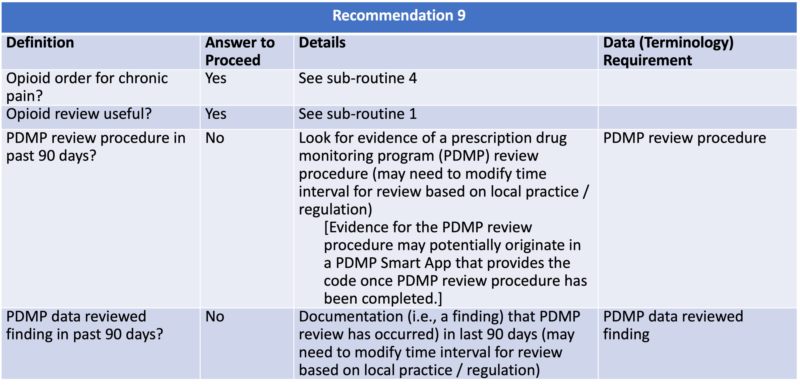
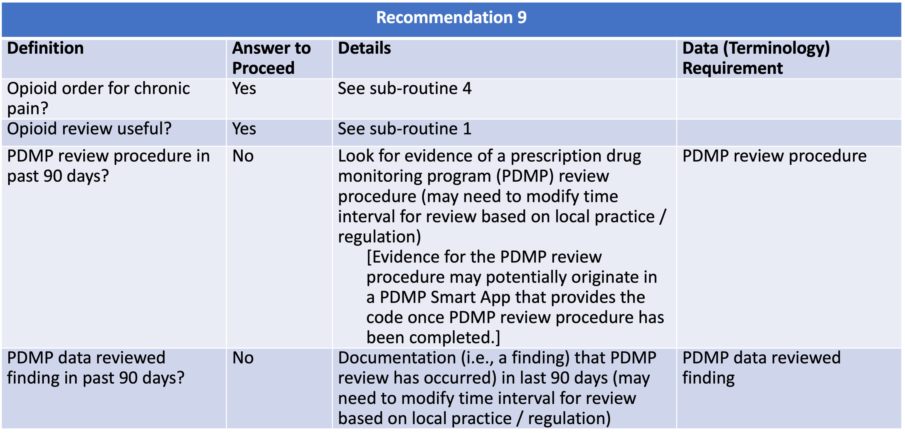

Long-term opioid use often begins with treatment of acute pain. When opioids are used for acute pain, clinicians should prescribe the lowest effective dose of immediate-release opioids and should prescribe no greater quantity than needed for the expected duration of pain severe enough to require opioids. Three days or less will often be sufficient; more than seven days will rarely be needed (recommendation category: A, evidence type: 4).
The following artifacts formalize the description of the logic and behavior defined by this recommendation.
| Resource | Type | Description |
|---|---|---|
| Recommendation #9 - Consider Patient’s History of Controlled Substance Prescriptions | Library | Defines the data requirements to support evaluation of recommendation #9 |
 
